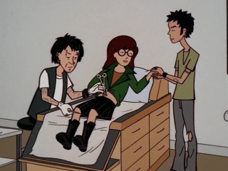

Episode Guide
Episode Guide
|  |
Pierce Me Episode #212 - July 27, 1998 Written by Neena Beber Song List Entries For This Episode Oops! List Entries For This Episode Transcript For This Episode |
|
Previous "See Jane Run" (#211) |
Next "Write Where it Hurts" (#213) |
|
Cast |
|---|
|
Regular:
Daria,
Quinn,
Helen,
Jake,
Jane,
Trent,
Jodie,
Stacy,
Jesse
Guest: Axl, Monique, Eric Schrecter, Jasmine, SSW Reporter, Spa Manicurist, Spa Stylist Non-Speaking: Brittany, Tiffany, Ashley-Amber Taylor, Theresa, Nicholas Campbell, Max Tyler |
|
Plot |
|
Summary:
Daria assists Trent in shopping for Jane's birthday, but ends up getting talked into having her navel pierced. Meanwhile, Helen and Quinn prepare for a mother-daughter fashion show being held at the school. |
|
Interesting Tidbits |
Historical & Cultural References:
|
|
Memorable Quotes |
|
Daria - We can bake cupcakes for the whole class and pretend you're really popular for the day. Jane - Will there be pony rides? Helen - A mother-daughter fashion show at school? To raise money? Daria - And consciousness. Daria - (shouts) You can hang up now! I got it! Hang up! Jake - (shouts) You have the phone, kiddo! Daria - (shouts) Okay, thanks, I'll hang up myself, then. (split-screen between Trent and Daria) Daria - Hi, Trent. Sorry about that. Trent? (Jane walks into kitchen) Daria - (on phone) Trent? Trent! (Jane laves) Trent - Hey, Daria. Daria - Uh, hi. What's up? (Jane walks into kitchen) Daria - (on phone) Trent? Are you awake? (Jane leaves) Trent - I, uh, need to ask you something. Daria - Me? Trent - Yeah, you. (Jane walks into kitchen) Daria - (on phone) So... Trent - So... Daria - (on phone) So... you wanted to ask me something? Trent - Right. Right, and, uh, yeah. That sounds excellent. See you then. Bye. (hangs up) Jane - None of your trick questions, young man. You're behaving strangely. Trent - You're the strange one. Jane - You are. Trent - You. Jane - Where are you going? Trent - Who are you? Mom? Jane - No, Mom would never ask where you're going. Trent - Exactly. (leaves) (Daria fantasizes) Trent - Daria? Daria - Yes, Trent? Trent - Want to hear this song I wrote... for you? Daria - You wrote me a song? Trent - You're my muse, you know. Daria - Really? Trent - It's called "Silly, Little Self-Deluded Girl. Why Would a Cool Guy Like Me Ever Write a Song About You?" (phone interrupts fantasy) Trent - Daria, I... Daria - (hopeful) Yes...? Trent - I want you to help me pick out a birthday present for Jane. Daria - (deflated) Oh. Trent - Thanks, Daria. I'll pick you up tomorrow morning. Not too early, sometime before lunch... or after. Daria - Um, okay. Trent - Or better yet, why don't we leave it loose? Helen - Daria? Last chance to join us for a mother-daughter day of beauty. It's very relaxing. Daria - Once you pass out from the pain. Daria - I wasn't expecting you for a couple of hours. Trent - I came straight from rehearsal. We ran late, or early... whatever. Trent - No art supplies. We decided already. Don't want to get her a CD. And I can't set foot in a bookstore. Don't ask me why, Daria. I just don't want to talk about it. So, what are your ideas? Daria - A fuzzy little bunny? Trent - (points at guitar) Hey, Daria, what do you think? Daria - Um, wouldn't that be more for you than for Jane? Trent - That's a really good point. Axl - Take a look at our piercing menu. Daria - I don't think that's how you spell "uvula." Axl - That's not "uvula." Trent - I've been wanting to put a hole right here. (points at eyebrow) Daria - You can never have too many holes in your head. Axl - You'd look nice with a lip ring. Daria - Are you going to let him talk to me that way? Axl - Hey, you are 18, aren't you? I should've asked. Daria - Is it a problem if I'm not? Axl - Yeah. You'll need parental permission. This establishment is licensed to serve adults only and operates strictly according to the letter of the law. Trent - She is. Axl - Right. Helen - Hello, Jasmine. Quinn, this is Eric, from work. And Eric, Jasmine, this is Quinn. She's going to be my daughter and I'm going to be her mother in a fashion show. Actually, she is my daughter, and I was just trying to be a good parent... oh, my God, what have I done? Daria - Have I mentioned that I hate pain? Axl - Now, this won't hurt. It's no worse than popping a pimple. Daria - Ahh! Axl - I haven't done anything yet. Daria - I was thinking about how much it hurts to pop a pimple. (at school, in the girl's bathroom) Daria - (from stall) Psst! Jane - Oh, no. The toilet is talking to me again. Daria - (from stall) Psst! Lane! Jane - Talking toilet, you may call me "Jane." Jane - Don't you get it, Daria? You did something stupid for a guy. Gee, you may join the human race after all. Daria - I didn't do it for a guy. I did it so Trent could get the special. Jane - Oh, that's different. Hey, what'd you end up getting me? Daria - I can't say. Jane - I hope it's art tools. I need some new supplies. Daria - I did do it for a guy, didn't I? Jane - Oh, yeah. Daria - It's gone. Jane - What's gone? Daria - I'm not pierced anymore. It closed up. Jane - You didn't take the ring out? Daria - Just for the night. I couldn't stand the itching. Jane - I've heard of fast healers but this is ridiculous. Daria - Gee, maybe E.T. came in my room and touched my navel while I slept. Jane - Boy, Daria, you have the weirdest sex dreams. Helen - Honey, it was just a little school fund-raiser. You'll have other moments in the sun. Quinn - But none with you, Mom. Helen - Oh, that's so sweet. Quinn - Nope. None with you. No freaking way. Helen - Quinn, what's the matter with you? Jake - Your sister's not pierced. Why would you scare us like that? Quinn - But... but it was there yesterday! Daria - Trying to brighten your ho-hum life with a little illusion? (yawns) Boy, I'm tired. Night, everybody. (heads upstairs) Quinn - She was pierced... pierced, I tell you! Oh, the humanity... |
|
Mike Quinn's Delayed Reaction Review |
|
Loveline:
The scenes with Daria and Trent on the phone were priceless. Heck, the entire phone interaction was great. First, Jake thinks it's for Quinn, then Quinn thinks it's a telemarketer and gives it to Helen to "tell him off" and realizes it was for Daria. Daria got so flushed when she realized that Trent wanted to talk to her that she didn't realize that she took the cordless phone with her. Trent's actions and facial expression when Jane walked by were some of the most laugh out loud moments of the season (even if they were drawn out a bit too long). It was almost surprising that Jane took so long to question Trent. |